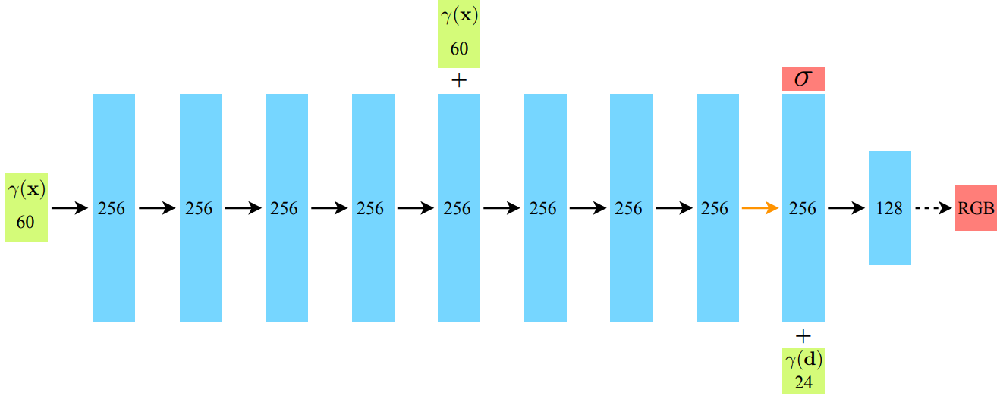

NeRF & Instant NGP
NeRF
Representing Scenes as Neural Radiance Fields for View Synthesis
Motivation
要真正理解工作究竟干了什么，逻辑上，要先了解一个3D物体模型摆在那里，是如何成像到屏幕上的。传统CG上，是真实物体用frustum框住，经过透视投影到2D，然后通过光栅化赋予像素颜色，通过Shading打上光，通过纹理赋予其他属性，等等。但是这种方法高度不可参数化，而且工作量复杂，因为需要获取texture，geometry等信息。有什么好的方法去 represent a static scene呢？论文中提出了一种continuous 5D function来进行表示，并配合了Volume Rendering进行2D成像。那么有了如此高度化参数化的表达形式，我们可不可以用来干一些创新的操作呢？神经网络就很喜欢参数，并且喜欢拟合函数进行“猜测”。因此，作者用神经网络强大 的“猜测”能力，解决了一个实际应用问题： synthesizing novel views of complex scenes。
Technical Contribution
- An approach for representing continuous scenes with complex geometry and materials as 5D neural radiance fields, parameterized as basic MLP networks.
- A hierarchical sampling strategy to allocate the MLP’s capacity towards space with visible scene content. （这一点后面会说）
- A positional encoding to map each input 5D coordinate into a higher dimensional space, which enables us to successfully optimize neural radiance fields to represent high-frequency scene content.（之后也会说）
5D & Volume Rendering
以下的内容，还没涉及到down-streaming task相关的内容。在task-specific application的时候，逻辑会和下面介绍的略有不同。
Detailed Definition of 5D Function
在定义函数之前，先说明一些背景。假设一个物体在原点，然后距离半径为R的半球里面，分布了很多的camera，面向这个物体，能够拍摄照片，i.e.，能够发出大量的光线。光线拥有单位方向向量，用笛卡尔坐标系下的标准球坐标系进行表示，因此只需要两个参数：\(\theta\) \(\phi\)进行表示。
那么可以来看这个5D函数到底干什么了：输入的是一个点的坐标\(\textbf{x}（x, y, z）\)，以及一个经过该点的光线的单位方向向量的笛卡尔单位球的角度表示(\(\theta\), \(\phi\))，输出的是这个输入下该点的RGB值\(\textbf{c} = (r,g,b)\)和密度(density)\(\sigma\)。这一句话里面最难理解的是密度\(\sigma\)了，它代表该点的对光的阻挡效果，密度越高，光越透不过去，反之则光很容易透过去。这很容易理解，阳光下举起一片薄树叶，依然能够看到树叶后的部分景色；而如果举起一块鹅卵石，根本看不见。另外，为什么RGB值还需要输出，一个点的RGB直觉中不应该一样吗？但是其实细想发现不是如此。一个物体在不同视角下，因为光线的不同，颜色是会发生略微的变化的，即使是这个物体上的同一个点。
这便是Technical Contribution第一点。
Volume Rendering
那么我们现在可以高度参数化一个模型了：在一个视角下，即在一堆散发出来的光线下，会经过现实模型中的一系列点，然后都能通过函数知道在这条（些）光线的视角下，它们各自的density与RGB是多少。那么如何成像呢？我总不能再走一遍Graphics Pipeline了，要利用上这些参数。因此，这里沿用了传统的体渲染技术：use classical volume rendering techniques to accumulate those colors and densities into a 2D image（论文原文）。在这条光线上，假设我知道经过了哪些点，那么这些点的xyz坐标和光线的density和RGB我都知道。这条光线将会代表的颜色是什么呢？体渲染公式如下：
其中：
- \(C(r)\)是光线\(r\)的最终颜色，有红绿蓝三个颜色的分量。
- \(t_n\)和\(t_f\)分别是光线的近裁剪面和远裁剪面的参数。
- \(T(t)\)是从起点到当前点t的透明度积累（通常为 \(T(t) = \exp\left(-\int_{t_n}^{t} \sigma(r(s)) \, ds \right)\)）。
- \(\sigma(r(t))\) 是点 \(r(t)\)处的体积密度。
- \(c(r(t))\)是点 \(r(t)\)处的颜色。
那么这样一个光线最后呈现的颜色知道了，一个摄像头就是知道了不同方向的光线的颜色，也就知道了最后如何像素上面填颜色了。
Training and Inferencing for Task
Pipeline
那么接下来将会详细讲解网络的pipeline。首先输入进网络的是一个视角下拍摄的照片，以及摄像机的位置和方向。网络一共有两个：粗网络和细网络。粗网络上：首先，一条光线上，会通过粗采样在近点和远点之间选出一堆空间中的（不是物体上的！）点（没错，原本物体的3D信息是不知道的），输入进5D函数（这个函数使用一堆全连接层去拟合的）（一开始不知道，任意初始化的），“得到”（“得到”这一块的网络也会细讲）这些点的density and RGB，然后；然后对于相机来说，用这些密度和颜色信息进行体渲染，得到一张图片，pixel-wise地和ground truth图片进行颜色上的比较，计算出MSE Loss并反向传播更新梯度。拿到了粗网络提供的点的密度信息，更新采样策略，进行细采样，得到新的一堆采样点，和粗采样出来的点集进行和并，再一次一起输入进5D函数，“得到”了一堆的颜色和密度信息，进行体渲染，得到图片并计算MSE Loss，最后用粗网络的loss和细网络自己刚刚算出来的loss相加，用这个合并后的Loss去反向传播。
Loss公式：\(L = \sum_{r \in R} \left( \left\| \hat{C}_c(r) - C(r) \right\|_2^2 + \left\| \hat{C}_f(r) - C(r) \right\|_2^2 \right)\)
下图很好地展示了上述的流程：
当然，上述还不够细节，网络流程如下图（图来自原论文）。上图中红箭头后面的流程，就如上述所说；而红箭头之前的部分，就是在尝试拟合5D函数，但是仍有几个细节需要补充。

Multi-view Consistent Representation
We encourage the representation to be multiview consistent by restricting the network to predict the volume density σ as a function of only the location x, while allowing the RGB color c to be predicted as a function of both location and viewing direction. (from NeRF)
第一点：为什么红箭头后面先单独出密度，输出它之后才再结合光线方向信息，经过MLP得到颜色值呢？因为直觉上：不同角度观察下的同一个点，虽然说它的颜色是不同的，但是density应该是相同的！因此，直到输出density之前，网络中不能知道方向信息的存在。
谁先输入，谁先输出，谁后输入，谁后输出，下图演示的很清楚：

Positional Encoding
This is consistent with recent work by Rahaman et al. , which shows that deep networks are biased towards learning lower frequency function. (from NeRF)
第二点：\(\gamma\)是什么玩意儿？其实这代表Positional Encoding坐标和方向向量之后结果。为什么要位置编码？因为实际中，点之间的距离变化较短，但是蕴含的信息的变化可能“较快”，即，sampling频率不够，容易造成输出图像颜色和密度变化较为平缓的现象。Positional Encoding公式如下： 这样通过双射将低频的信息投射到高频的信息，让它能够感知高频的变化，从而增加鲁棒性。在本篇工作中，xyz信息和view信息都进行了位置编码。有趣的是，这在transformer中也有应用，但是论文中着重提及了Transformer和NeRF中两者作用上的区别：
A similar mapping is used in the popular Transformer architecture, where it is referred to as a positional encoding. However, Transformers use it for a different goal of providing the discrete positions of tokens in a sequence as input to an architecture that does not contain any notion of order. In contrast, we use these functions to map continuous input coordinates into a higher dimensional space to enable our MLP to more easily approximate a higher frequency function.
这便是technical contribution第二点。
Hierarchical Volume Sampling
Our rendering strategy of densely evaluating the neural radiance field network at N query points along each camera ray is inefficient: free space and occluded regions that do not contribute to the rendered image are still sampled repeatedly. (from NeRF)
为什么要设计Coarse and Fine Sampling（粗采样和细采样）？原因在上面这段论文中的原话已经说的很清楚了。均匀采样这种coarse的采样很容易把注意力分塞在那些density巨低的地方。因此在粗采样后大概知道那一片部分分布的点多之后，需要一种机制在有点的地方多采样。就如下一张图所示：检测到的密度值随距离变化的函数，发现有很多地方由于没有点，而密度非常非常低，那么均匀采样就显得不是那么合适了。
 上面的两个公式：第一行表示在范围 \([tn,tf]\)区间中均匀采样，第二行表示根据密度信息细采样。
上面的两个公式：第一行表示在范围 \([tn,tf]\)区间中均匀采样，第二行表示根据密度信息细采样。
这便是technical contribution第三点。
Concatenation
为什么xyz坐标信息经过位置编码之后变成了256的高维信息之后，仍然需要和原来的位置编码concate呢？原论文中没细说，但是通常认为这种方法有助于提高网络对细节的捕捉能力，因为网络能够接收到更多的频率成分，这对于表示复杂的场景和细节非常重要。
Conclusion
5D函数表示，位置编码，继承式采样（细采样）非常work。下图展示了：如果没有视角信息（5D缺失方向角度的2D）、没有位置编码的效果是较差的。直观看出：没有视角信息，很难产生高光（specularity）效果；没有位置编码，模型不robust，inference结果pixel之间的颜色变化很保守。

于是乎地，一篇伟大的工作诞生了：
Instant NGP
Neural graphics primitives, parameterized by fully connected neural networks, can be costly to train and evaluate.
Instant-NPG和NeRF有很多的相似之处，但是NeRF原来的MLP网络训练时间很长。为了能高质量重建场景，往往需要一个比较大的网络，每个采样点过一遍网络就会耗费大量时间。因此论文中提出了使用grid来解决，即voxel。把整个空间用一个个的立方体，每一个顶点都对应一个高维特征，那么对于任何一个点，找到包围它的八个定点，利用它们的xyz坐标用一种数据结构引索出八个高维特征，然后通过Interpolation就可以实现点的高维特征的表达了。
那么什么数据结构能够通过点的坐标信息引索值呢？哈希表应运而生。将xyz坐标通过哈希函数映射到整数，然后在数组里面引索出高维特征，就可以了。而立方体的大小如果是固定的话，那么就不够robust，因此需要不同分辨率下的立方体划分。来多重表达这个高维向量。论文中，一共有8种分辨率，然后最后会对八个属性结果再一次进行插值。
在论文中，数组的容量有限，因此可能会产生哈希冲突，即不同的立方体顶点索引到的高维向量可能是一样的。但是论文中认为，这并不是问题，因为有八个分辨率的结果，足以克服这种小扰动。

因此Instant NGP的pipeline如上，和NeRF非常相似。对于一个点，在一个分辨率下，找到立方体的八个顶点，这八个顶点xyz坐标各自经过哈希函数得到引索，从哈希表中以\(O(1)\)的时间复杂度得到各自的高维特征向量，然后进行插值，这个操作重复八次（因为有八个分辨率）。得到了八个高维向量之后，再次插值得到向量，输入MLP（这里使用的不是NeRF的MLP，而是很小的MLP，因为输入向量的参数数量不多）；而之后的一切和NeRF非常相似。
关于\(point\rightarrow vector_{input}\)的生动化过程如下（来自原论文；用2D的演示图来演示3D中的实际操作）